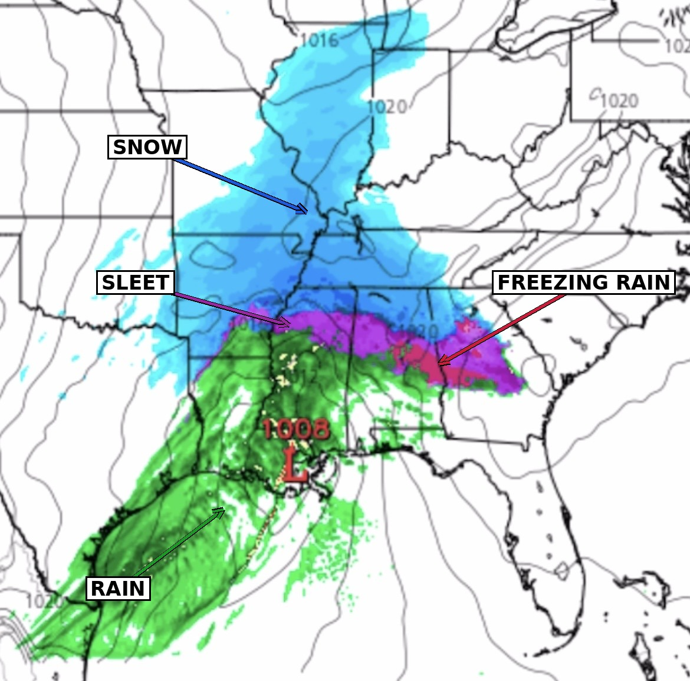

Precipitation
An overview of the different types of precipitation and how meteorologists track and forecast precipitation.

Types of Precipitation
What falls from a cloud almost always starts out as snow. However, what it turns into by the time it reaches the ground depends entirely on the temperature profile it falls through.
Snow
Snow forms when the entire atmospheric column, from the cloud all the way to the surface, stays near or below freezing. Since the snowflake never encounters an air layer warm enough to melt it, it reaches the ground still frozen.
Sleet
Sleet occurs when a snowflake falls through a shallow layer of air above freezing, partially melting it, before falling back into a deep enough layer of sub-freezing air near the surface to refreeze it into a small ice pellet before it reaches the ground.
Freezing Rain
Freezing rain forms when a snowflake falls through a deeper warm layer, fully melting into a raindrop. It then passes through only a thin layer of sub-freezing air near the surface, which is too shallow to refreeze it before landing. Instead, it stays liquid until it strikes a surface that is at or below freezing, where it freezes on contact.
Rain
Rain falls when the warm layer extends essentially all the way to the surface. The snowflake melts aloft and never re-enters a sub-freezing layer, so it reaches the ground as plain liquid rain.
How Precipitation Type Is Determined
The diagram below shows a simplified version of the atmospheric temperature profile behind each precipitation type. Blue represents air below freezing, and red represents air above freezing. Click a button below to switch between types.
No melting occurs — falls to the ground as snow.
Partially melts, then refreezes into ice pellets before reaching the ground.
Fully melts into rain, then freezes instantly on contact with the below-freezing surface.
Melts aloft and never refreezes — reaches the ground as plain rain.
Reading Radars

Radar maps show meteorologists where precipitation is currently falling, how intense it is, and where it's headed next. There are actually two different kinds of radar color schemes you'll run into, and it's important knowing the difference depending on which type of radar/precipitation map you are reading.
Precipitation-type radar: blue = snow, pink/purple = freezing rain and sleet, green = rain.
During winter storms, radar output is often paired with model precipitation-type guidance to distinguish not just where precipitation is falling, but what kind is expected in each location.
Standard reflectivity radar: blue/green = lighter precipitation, yellow/orange/red = progressively heavier precipitation.
Most standard radar displays — including the live radar later on this page — instead show precipitation intensity rather than type. This scale doesn't tell you whether it's raining or snowing, but instead shows how heavy the precipitation is. Therefore, it's usually paired with temperature data or a separate precip-type product when that distinction matters.
Forecasting Precipitation
Meteorologists forecast precipitation by examining weather model guidance to determine where precipitation is likely to develop, when it will occur, and how much precipitation may fall. They compare different models and ensemble forecasts to identify areas of agreement and uncertainty.
Meteorologists also examine the forecast precipitation type, particularly when rain, snow, sleet, or freezing rain are possible. As the event gets closer, radar and satellite observations provide information about how precipitation is developing and moving, allowing meteorologists to adjust the forecast based on current conditions.
Live Radar
Track precipitation happening right now. Pan and zoom the map to any location, and use the play/pause button to animate the last 50 minutes of radar returns.
Note: this radar uses the standard reflectivity scale (green = lighter precipitation, red = heavier), which shows intensity rather than precipitation type. It won't match the blue/green/pink color legend described earlier on this page, as that color-by-type view comes from a different, more specialized data product.
Reflectivity scale (dBZ), light to extreme precipitation